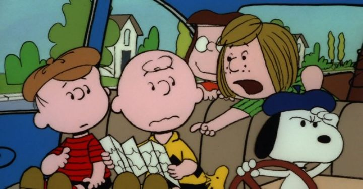

Disclaimer: This review covers two theatical Peanuts movies, 1977's "Race for Your Life, Charlie Brown" and 1980's "Bon Voyage, Charlie Brown."... huh. I grew up with "A Boy Named Charlie Brown" and "Snoopy, Come Home" on VHS. I had assumed those were the only two theatrical movies, and that everything else was just a television special. But apparently, these other two were also released in theaters: "Race for Your Life, Charlie Brown," and "Bon Voyage, Charlie Brown." Having long given up on seeing every special, I had never gotten around to seeing these movies either, until now as an adult. It's a bit overkill to review all of them, but I've been reviewing every theatrical 2D animated film I could find so far, so I guess I'll include them now.There are a few noteworthy differences here in production. While not clear from online sources, a featurette on the Bluray suggests the production team had changed from the prior two movies, as did the licensing (CBS owns the last two, while these were distributed by Paramount). Classic composer Vince Guaraldi had also passed away by this point, so the music score was reworked by other newcomers. The general feel, even from the titles ("XXX, Charlie Brown!"), is that these were done by the team responsible for all the television specials, just extended to a longer runtime. Indeed, most of the jokes from the comics have been used and reused by this point in animated form, so the team puts the cast in new settings for variety. "Race for Your Life" takes place in summer camp, a frequent subject in the comics, and the primary plot is of the children competing against the bullying "big kids," finalized by a multi-day river race. "Bon Voyage" has Charlie Brown, Linus, Peppermint Patty and Marcie chosen for an exchange-student program, going off to France for a week, while uncovering a mystery behind an invitation to a seemingly abandoned mansion outside of town. Interestingly, the locations of "Bon Voyage" were inspired by Charles Schulz's time in the army, and he revisited these locations in preparation for the film.  The new locations are fun, but feel like they've lost something in translation from the original comics. Maybe it was the strange tone, especially in "Bon Voyage." For the first time, older kids and even adults are visualized and are heard speaking in these movies, drawn in Bill Melendez's studio style since there wasn't much source material in the comics to copy. These are all still the characters we know and love, but somehow it didn't feel as "sincere," as Linus might say. It was clearly trying to make the Peanuts more exciting then they were ever meant to be in the comics, to keep audiences' attention.The new production quality is a little better, buy not signifcantly so, than past movies, probably in an attempt to retain the style that was already established. The Bluray release of these are presented in 16:9 widescreen (while the two older movies are in 4:3), and feel cropped. The quality varies, but like the others, there's plenty of color noise, and maybe less dirt and smudging overall. The biggest benefit is that the new settings allow for some new jokes and gags, which were novel to me and made me chuckle. Otherwise, I still think of "Race for Your Life" and "Bon Voyage" as simply glorified tv specials. If you don't already have fond memories and don't want to watch EVERY movie, these are probably skipable to anyone but the biggest fans.
- "Ani" More reviews can be found at : https://2danicritic.github.io/ Previous review: review_Quest_for_Camelot Next review: review_Rage_of_Bahamut_-_Genesis